Alternadores
Teste de carga, reparo e recondicionamento. Troca de regulador de voltagem, rolamentos, diodos e escovas.
- Bateria descarregando
- Luz da bateria acesa
- Ruído no alternador
Especialistas em alternadores, motores de partida e injeção eletrônica. Diagnóstico preciso, peças de qualidade e atendimento direto com quem entende.
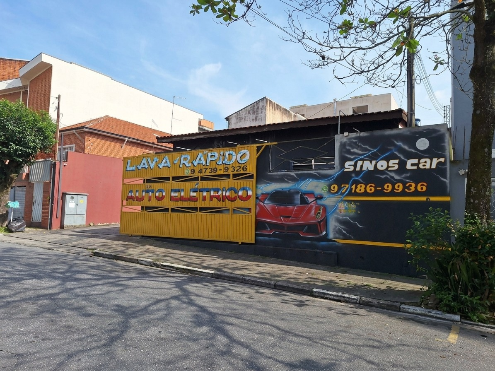
Do carro que não liga à luz da injeção acesa no painel: identificamos a causa e resolvemos.
Teste de carga, reparo e recondicionamento. Troca de regulador de voltagem, rolamentos, diodos e escovas.
Diagnóstico e reparo completo do motor de arranque: automático, induzido, bendix, buchas e escovas.
Leitura de falhas com scanner, limpeza e teste de bicos, sensores, módulos e chicotes.
Aqui você fala com quem entende do assunto. Primeiro encontramos a causa do defeito, depois explicamos o que precisa ser feito e passamos o orçamento. O serviço só começa com a sua aprovação.
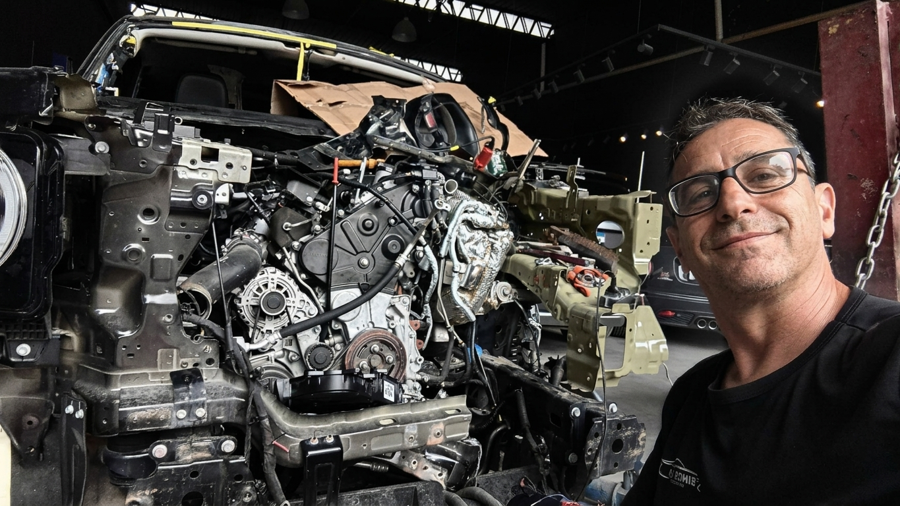
Algumas das peças que passam pela nossa bancada. Toque em uma delas para perguntar direto no WhatsApp.
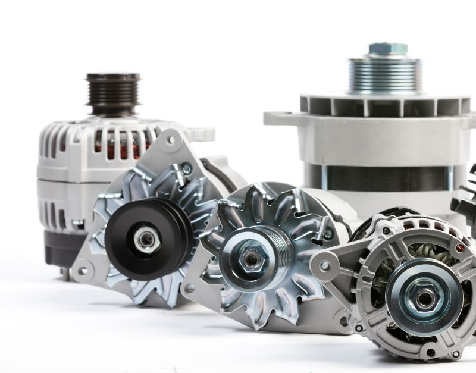
Alternadores de vários modelos Consultar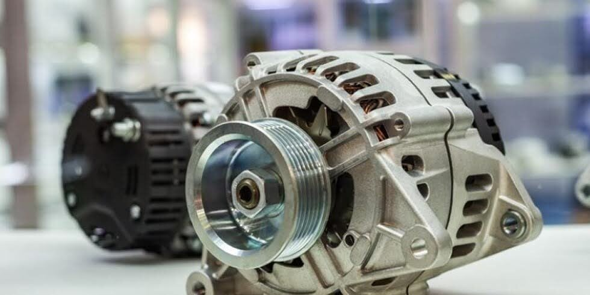
Reparo de alternador Consultar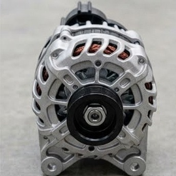
Alternador, vista frontal Consultar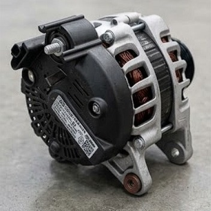
Alternador, vista traseira Consultar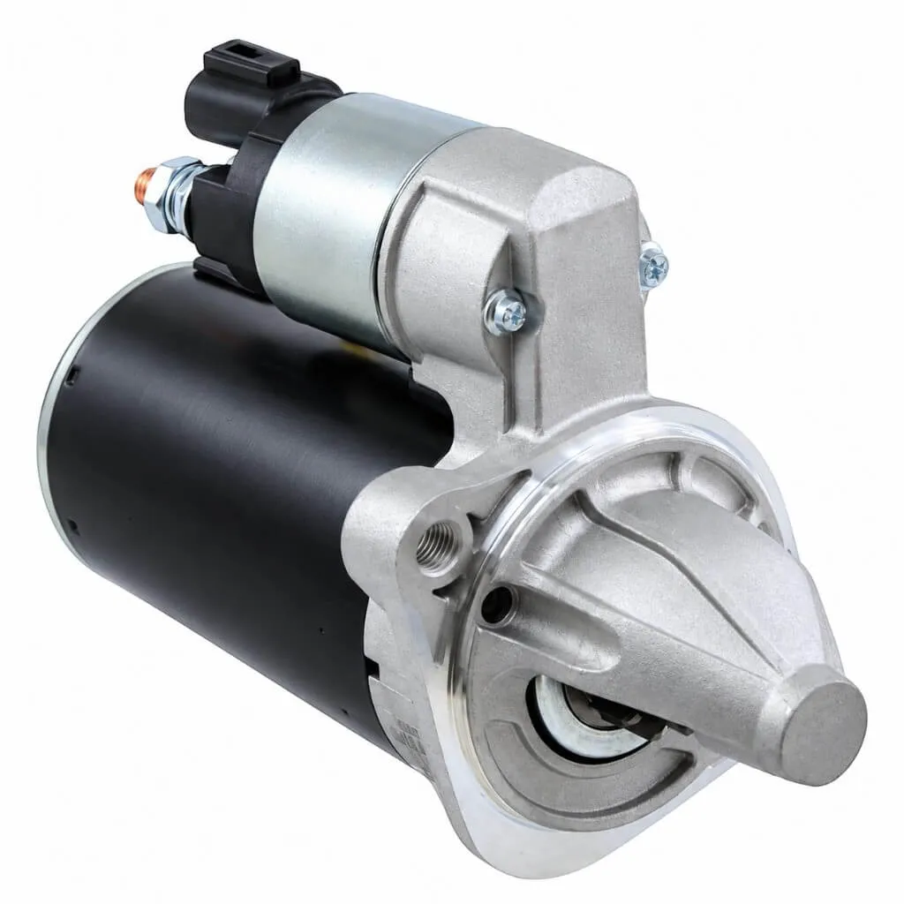
Motor de partida Consultar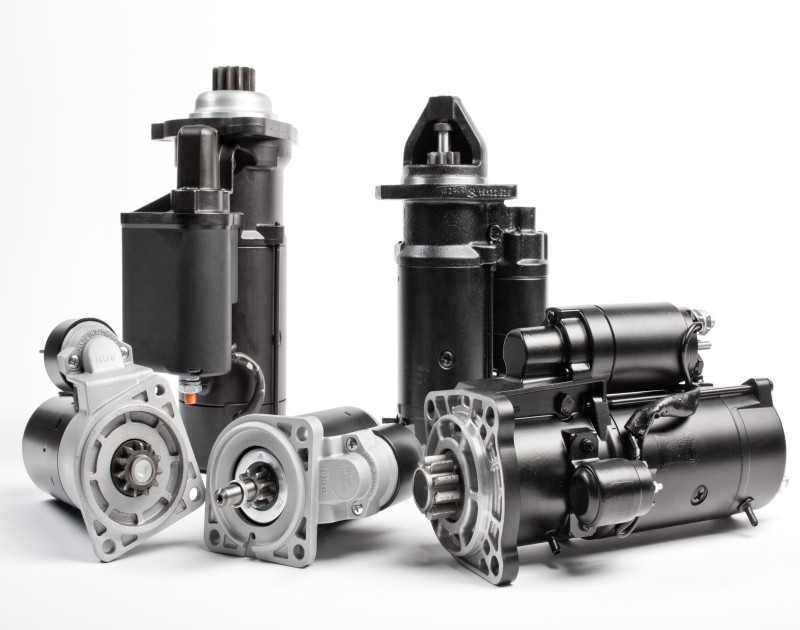
Motores de partida de vários modelos Consultar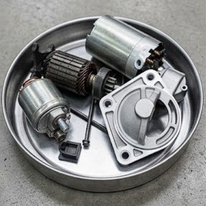
Motor de partida desmontado Consultar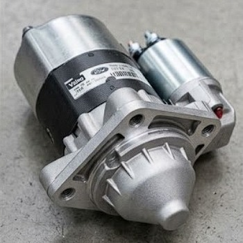
Motor de partida montado Consultar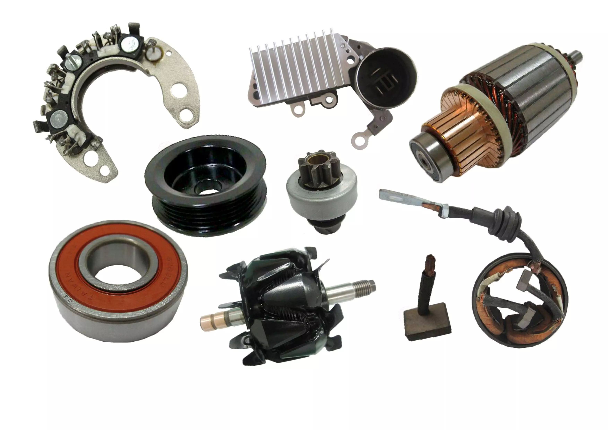
Peças de alternador e motor de partida Consultar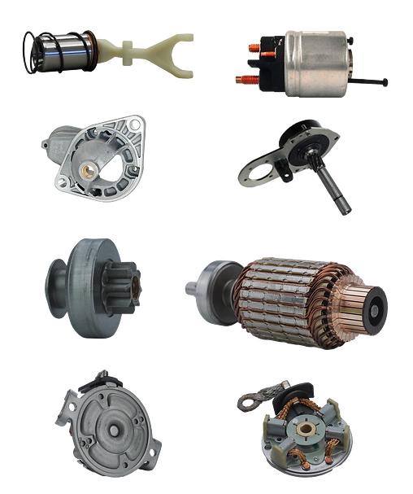
Peças de motor de partida ConsultarFazemos serviços de parte elétrica para oficinas mecânicas. Envie o veículo ou a peça (alternador, motor de partida, módulo) e receba de volta testado e pronto para montar.
Conte o problema ou mande foto da peça.
Testamos em bancada ou no veículo e passamos o orçamento.
Serviço feito com peças de qualidade, após sua aprovação.
Peça ou veículo devolvido funcionando e conferido.
Rua Teodoro Sampaio, 535
Bairro Cerâmica · São Caetano do Sul – SP
CEP 09530-720
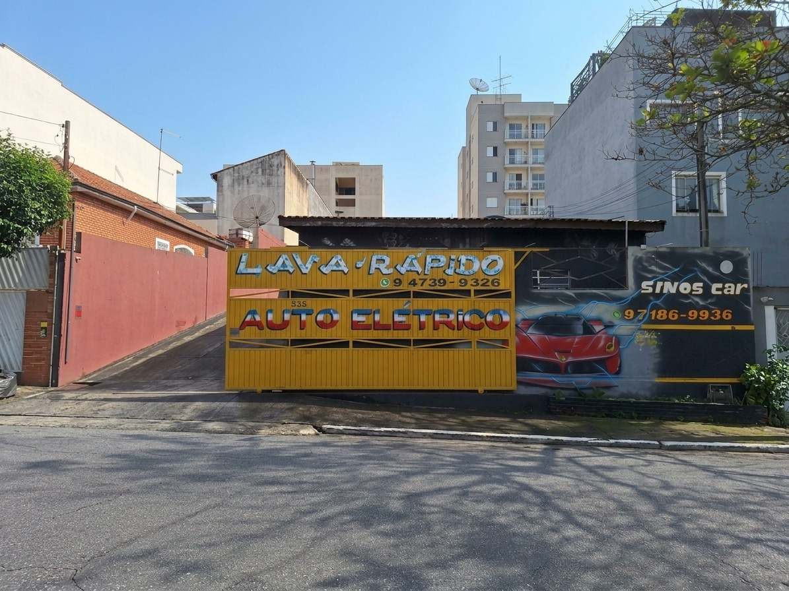
Fale agora com a Sinoscar e receba um atendimento rápido.
(11) 9 7186-9936